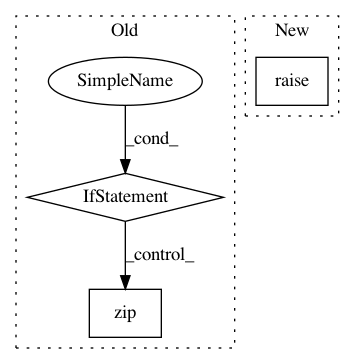

5a53f60e5143ab6f416437dadddd2f1df133a247,pgmpy/models/JunctionTree.py,JunctionTree,check_model,#JunctionTree#,238
Before Change
True if all the checks are passed
for clique in self.nodes():
if self.get_factors(clique):
pass
else:
raise ValueError("Factors for all the cliques or clusters not"
"defined.")
if len(self.factors) != len(self.nodes()):
raise ValueError("One to one mapping of factor to clique or cluster"
"is not there.")
for factor in self.factors:
for variable, cardinality in zip(factor.scope(), factor.cardinality):
if ((self.cardinalities[variable]) and
(self.cardinalities[variable] != cardinality)):
raise CardinalityError(
After Change
if not nx.is_connected(self):
raise ValueError("The Junction Tree defined is not fully connected.")
return super().check_model()
In pattern: SUPERPATTERN
Frequency: 3
Non-data size: 3
Instances
Project Name: pgmpy/pgmpy
Commit Name: 5a53f60e5143ab6f416437dadddd2f1df133a247
Time: 2015-04-07
Author: abinash.panda.ece10@itbhu.ac.in
File Name: pgmpy/models/JunctionTree.py
Class Name: JunctionTree
Method Name: check_model
Project Name: keras-team/keras
Commit Name: 0f6b6eda26f8ccc7c8803fa2b8fab0f43fa4672a
Time: 2021-02-25
Author: scottzhu@google.com
File Name: keras/layers/preprocessing/string_lookup.py
Class Name: StringLookup
Method Name: get_vocabulary
Project Name: tensorflow/magenta
Commit Name: e6597d7918d4b374dba407ca91654a7d8f884fbb
Time: 2018-01-30
Author: curtis@thefjord.org
File Name: magenta/models/music_vae/data.py
Class Name: BaseNoteSequenceConverter
Method Name: to_tensors